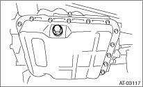
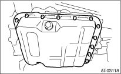
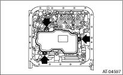

AUTOMATIC TRANSMISSION(4AT) > Control Valve Strainer
1. Set the vehicle on a lift.
2. Disconnect the ground cable from the battery.
3. Lift up the vehicle.
4. Clean the transmission exterior.
5. Remove the drain plug (ATF) to drain the ATF.
CAUTION:
The ATF will be extremely hot after driving. Be careful not to receive burns.

6. Perform replacement with a new gasket, and tighten the drain plug (ATF).
Tightening torque:
25 N·m (2.5 kgf-m, 18.4 ft-lb)
7. Remove the oil pan.
CAUTION:
Be careful not to allow foreign matter such as dust or dirt to enter the oil pan.

8. Remove the magnet.
9. Clean the magnet.
10. Completely remove the remaining liquid gasket on the transmission case and oil pan.
11. Remove the control valve strainer tightening bolt, and remove control valve strainer from the control valve body.
